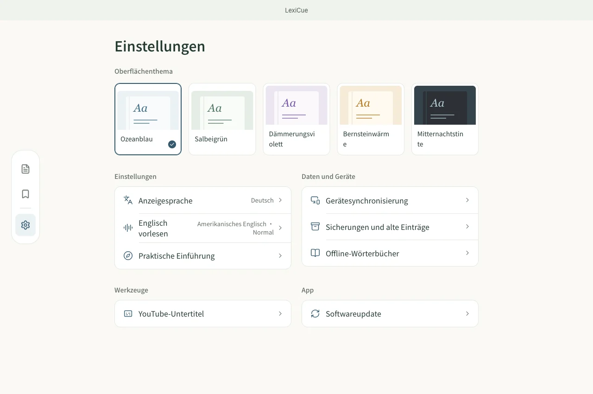
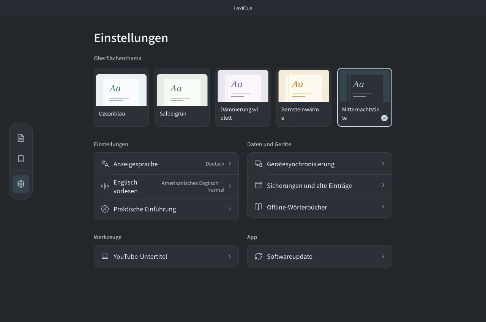

Einstellungen
Mac und iPhone teilen vier Einstellungsgruppen; einzelne Aktionen richten sich nach der Plattform.
Auf dieser Seite
Darstellung und Einstellungen
Wähle Englisch, Chinesisch, Japanisch oder Deutsch als Oberflächensprache. Gelernt wird Englisch. Fünf Themen stehen auf der Einstellungsstartseite; Schriftgrößen stellst du beim Lesen ein.
Die Einstellungsgruppe enthält außerdem Sprachausgabe und das erneute Öffnen der Einführung.



Mac und iPhone koppeln
- Verbinde einen Mac und ein iPhone mit einem gegenseitig erreichbaren lokalen Netzwerk und öffne auf beiden die Gerätesynchronisierung. Erlaube den lokalen Netzwerkzugriff und am iPhone die Kamera.
- Zeige den zeitlich begrenzten QR-Code am Mac und scanne ihn am iPhone. Vergleiche Gerätenamen und Code auf beiden und bestätige dort jeweils. So werden die lokalen Bibliotheken zusammengeführt.
Synchronisierung und Wiederherstellung
Synchronisiert werden Texte, Satzzeiten, vorhandene chinesische Übersetzungen, Kontexte, Notizen, Tags und Lesepositionen samt Änderungen und Löschungen. Originalmedien und Geräteeinstellungen bleiben vor Ort. Windows und Android unterstützen diese Apple-Synchronisierung nicht.
Vor der ersten Zusammenführung erstellen beide Seiten eine wiederherstellbare Sicherung. Offline-Änderungen folgen nach Wiederverbindung; das iPhone muss im Vordergrund bleiben. Der Mac kann nach Schließen des Fensters weiter empfangen. Schlafmodus oder getrennte Gastnetze können Verbindungen unterbrechen.
Prüfe bei Bedarf erhaltene alternative Bearbeitungen in der Gerätesynchronisierung. Das Entfernen eines Geräts widerruft Vertrauen und behält lokale Daten. Gerätemanagement bietet Sicherungen vor der Zusammenführung; Synchronisierung ersetzt keine eigene Sicherung.
Daten: Sicherung und Wörterbuch
Sicherung bietet Export, Wiederherstellung und Verlauf. Wörterbuch zeigt die Verfügbarkeit von lokalem Longman und Audio. Bei Fehlern kannst du erneut versuchen. Online-Quellen benötigen Internet.
Wörterbuchbedeutungen
Die Suche kann eine Referenz zum aktuellen Wörterbuchergebnis behalten. Diese bestätigt keine Satzbedeutung. Auch ohne Eintrag kannst du deine eigene Erklärung speichern.
Werkzeuge: Untertitel
Desktop bietet Browser-Sitzungen und Abhängigkeitsdiagnosen. Das iPhone nutzt öffentliche englische Spuren und kann den Untertitelcache leeren. Alte Desktop-Einstellungen ermöglichen keine authentifizierten iPhone-Downloads.
App: Software-Updates
Öffne App → Software-Updates. Der Mac kann Updates prüfen; ein lokal installiertes iPhone zeigt Version, Installationsart und Hinweise. Dies bedeutet keine App-Store- oder öffentliche iPhone-Verteilung.